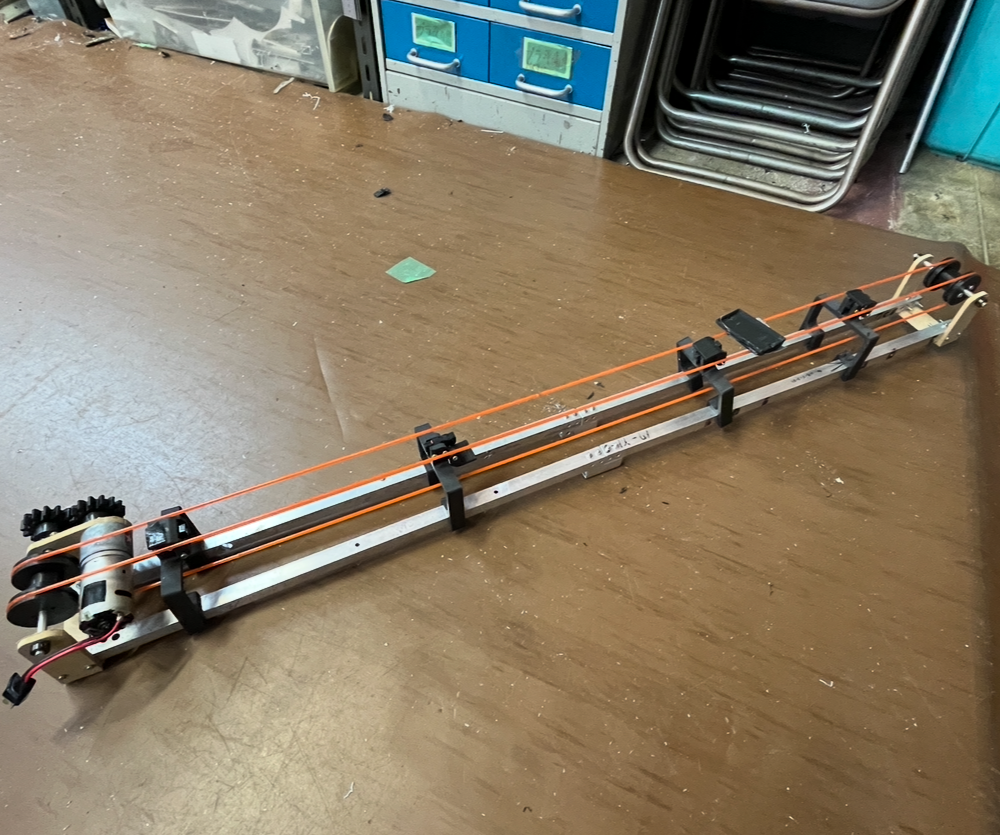

基礎研究とは、高専4年時に行う活動のことです。私たちの年のテーマは「寿司」に関する何かを作るというものでした。 私たちのグループでは、無駄のない最適化された配膳をコンセプトに、実際の店舗を想定した寿司提供システムを作りました。 その中でも私は、寿司を運ぶ寿司レーン、提供する提供レーン、皿を回収する回収レーン、皿を補充する補充レーンの四つのベルトコンベアを作成しました。 限られたスケジュールの中で、班員で協力しあい活動するいい経験になりました。 